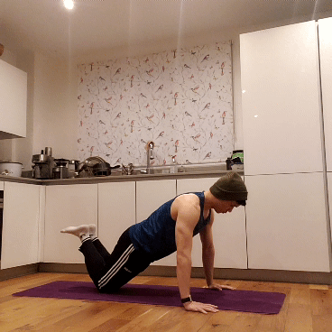
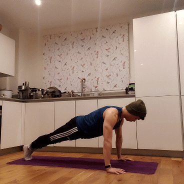
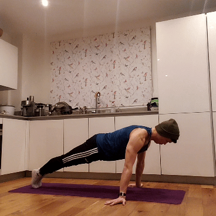
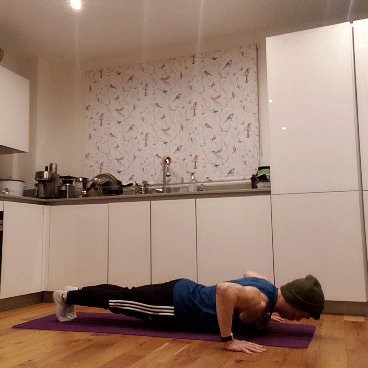

Upper Body: Pushup
1 Incline Wall Pushup

As you become more upright relative to the ground, pushups become easier due to less gravity. By doing incline wall pushups, you lessen the range of motion and the effects of gravity.
Tips:
- As you get better, move your feet further away from the wall. This shifts more of your weight onto the wall, creating more resistance.
- Get on your tiptoes to allow for a greater incline. This also means that you don't have to move your hands too far down the wall.
- As with all pushup variations, make sure your elbows don't flare out to avoid injuring yourself.
2 Knee Pushup

Also called a box pushup, this is a great way to work towards a full pushup. It shortens the distance from where you push and the pivot between your body and the ground, meaning that you need to exert less force than a traditional pushup.
Tips:
- It may be a bit awkward at first to find a comfortable position for your arms. Keep trying!
- Even though you need less strength to do these compared to a standard pushup, the requirements on your core are the same. Keep it tight throughout!
- If possible, rest your knees on a soft surface like a yoga mat.
- As with all pushup variations, make sure your elbows don't flare out to avoid injuring yourself.
3 Full Pushup

This is your standard-issue, run-of-the-mill, vanilla-flavoured push up. Nothing more to it. However, it's important to maintain perfect form with each rep. Quality over quantity!
Tips:
- With a wider grip, your chest will have to do more work. With a narrower grip, your triceps will have to do more work. Aim for the midway point (i.e., around 45 degrees from the shoulders) to work them equally.
- To keep yourself accountable, try to have your chest/nose touch the ground to count as one repetition.
- Avoid hyperextending (locking out) your arms at the top - they should be slightly flexed.
- As with all pushup variations, make sure your elbows don't flare out to avoid injuring yourself.
4 Inverse Pushup

The problem with pushups is that they can get boring. How about spicing it up by having your fingers face backwards? Since your hands are placed closer to your midsection, this will require greater core stability than a traditional pushup.
Tips:
- These are super interesting to do, since they work the same muscles as a normal pushup but it feels very different. Keep experimenting!
- Ensure that your shoulders and wrists are properly stretched before doing this exercise.
- Be extra careful when attempting these if you've never done them before. Never rotate your hands more than what feels natural.
5 Plyometric Pushup

If you've ever seen people doing clap pushups, these are the first step to getting there. Being able to push your body into the air is a true testament of push-up strength, so if you can do these properly - well done!
Tips:
- Remember this an explosive movement - you have to really give it your all! As a result, doing these when you're tired is probably not a good idea.
- When you land, you'll have to expend a lot of power to cushion your fall. If not, you'll end up splatting onto the ground!
- Similar to the inverse pushup, do not attempt these if you've never done something like this – landing repeatedly on your wrists can be extremely dangerous if you're inexperienced.
HOME